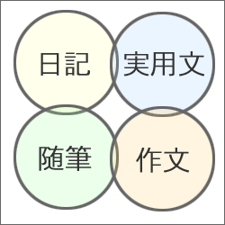
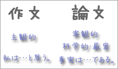
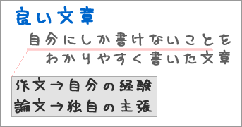
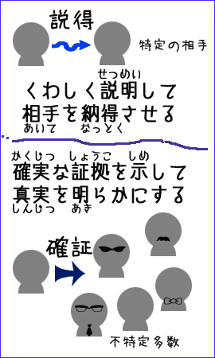
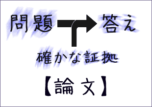
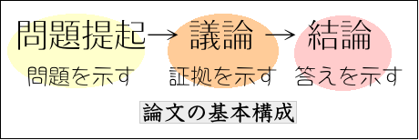

作文と論文の違い
論文とは何かを、作文と比較しながら考えてみよう。
作文と論文の定義
作文と論文は、それぞれ以下のように定義できる。
- 作文
- 経験や体験に基づいて自分の意見や考えを書いた文章
- 論文
- 理論に基づいた自分独自の主張を論理的に書いた文章
作文とは何か
作文は、大きく感想文と意見文に分けられる。
感想文は、自分の経験・体験に対する感想や経験・体験を通じて自分が考えたことを、わかりやすくまとめて書いたもののことである。
意見文は、自分の経験・体験をもとに、自分の主張や意見を論理的に書いたもののことである。
いずれの場合も、作文は、経験や体験に基づいて自分の意見や考えを書いた文章であるということができる。つまり、作文は、自分の考えを読み手に伝える方法のひとつである。
作文と随筆・日記・実用文との違い
作文と似ているものに随筆・日記・実用文がある。しかし、いずれも作文とは違うところがある。

随筆
個人的な印象や思いつき、人生観や価値観を自由な形式で書いたものを随筆という（随想／エッセー／エッセイともいう）。
随筆は、書き手の個性や主観を表現するもので、誰かに自分の考えを伝えることを目的とするものではない。また、経験や体験などの具体的な事実に基づかなくてもよいという点でも作文とは異なる。
なお、随筆は、小説や詩歌に近いものであり、論理的なものはまったく必要とされない。
日記
一日の出来事を記録し、日付ごとに整理したものを日記という。なお、個人的な記録を日記と呼ぶのに対し、グループ内で共有される記録は日誌といわれる。
もちろん、日記には、出来事だけでなく出来事に対する感想が書かれることもある。また、日記は虚構を含むことがあるし、随筆のように、その時々の思いつきや自らの人生観などが書かれることもある。しかし、日記が目指しているのは、あくまでもそれらを日常生活に含まれる事実の一部として記録することなのである。言い換えれば、日記に書かれたことは、すべて書き手が事実と見なしていることだといえる。
つまり、日記は、事実を記録するために書くものであり、自分の意見や考えを書き、それを人に伝えようとする作文とは異なるものである。
実用文
事実や意見・提案を特定の相手に伝えるために書かれる文章を実用文という。たとえば、上司に提出する企画書や報告書、顧客に出す案内状などは実用文である。
実用文は、事実や意見を伝えるために、わかりやすくまとめて書くという点では、作文と同じである。しかし、実用文は特定の相手を想定して書かれるものである。他方、作文はあらかじめ特定の相手に向けて書かれるものではない。
また、実用文では、経験や体験が重視されることがない。この点でも、経験や体験を基本とする作文とは異なっている。
論文は何を書くものか
論文は、自分独自の主張を書く文章である。また、〔作文とは何か〕で述べたように、作文は、自分の考えを読み手に伝えるために書く文章である。したがって、書き手の考えを書き、それを広く読み手に伝えようとする点では、論文も作文も同じであるといえる。
しかし、作文で書かれるものと論文で書かれるものとには大きな違いがある。作文で書かれるものが書き手の意見や考えという主観的なものであるのに対し、論文で書かれるものは事実に対する書き手の客観的な判断である。

ここで、「事実に対する判断」とは、何が事実であるか、事実がどのようなものであるかを決めるということである。
また、判断が「客観的」であるとは、判断が厳密な方法（たとえば、科学的な実験や統計調査）に基づいていること、または、特定の理論に合致していることをいう。
このことは、次のように言いかえることができる。つまり、作文の基本は『わたしは…と思う』（書き手の主観的な判断）であるが、論文の基本は『事実は…である』（客観的な判断）なのである。
良い文章とは
作家の井上ひさしは、良い文章について次のように述べている。
文章とは何か。これは、簡単です。作文の秘訣を一言でいえば、自分にしか書けないことを、だれにでもわかる文章で書くということだけなんですね。いい文章とは何か、さんざん考えましたら、結局は自分にしか書けないことを、どんな人にでも読めるように書く。これに尽きるんですね。だからこそ、書いたものが面白いというのは、その人にしか起こってない、その人しか考えないこと、その人しか思いつかないことが、とても読みやすい文章で書いてある。だから、それがみんなの心を動かすわけです。（井上ほか2002：32）
つまり、良い文章とは、自分にしか書けないことをわかりやすく書いたものだということである。では、自分にしか書けないこと
とは何だろうか。
作文では、自分の経験や体験が自分にしか書けないこと
になる。したがって、良い作文を書くには、自分の経験や体験について深く考えるところから始めればよいわけである。
一方、論文では自分にしか書けないこと
を自分で新しく発見しなければならない。また、新しい発見がないのであれば、その論文は価値がないものになってしまうだろう。
論文を書くときに自分にしか書けないこと
とは、他の人の考えとは区別される自分だけの考えだということになるだろう。良い論文とは、自分独自の主張を書いたものでなければならないのである。

論文が目指すもの
では、なぜ論文を書くのだろうか。つまり、何を目指して論文を書くのだろうか。
論文が目指のは、《特定の問題に答えを出すこと》である。そのために、論文は書かれるのだといってよい。しかし、論文では、単に答えを書けば良いというわけではない。

ペレルマン（1980：42）は、次のように述べている。
限られた人を相手とする言論は説得を目指すものであり、普遍的聴衆を相手とする言論は確証を目指すものである。
ここで、論文は、特定の相手に伝えるために書かれるものではないから、普遍的聴衆を相手とする言論
の一種だといえる。したがって、論文は、説得ではなく『確証』を目指すのである。
すでに述べたように、論文は、特定の問題に答えを出すことを目指すものである。しかし、論文では、答えの確かな証拠（確証）も同時に示さなければならないわけである。単に問題の答えを書くだけでは不十分なのである。
論文では、答えを確証するために、様々な証拠が示されていく。そして、そのなかで、新しい事実が発見されたり、事実に対する新しい解釈が明らかにされたりするのである。

論文の基本構成
論文は、「秩序ある構成」で「論理的に」書かれるべきものである。
まず、論文は《特定の問題に答えを出すこと》を目指すものである。そのため、論文では、次のような構成が基本となる。

また、論文は、確証を目指す
ものであるから、誰もが理解・納得できるように書かれなければならない。その条件を満たすためには、できるだけ論理的に書く必要がある。
なお、論文の構成について、さらに詳しいことは、〔小論文の構成の基本〕を参照せよ。